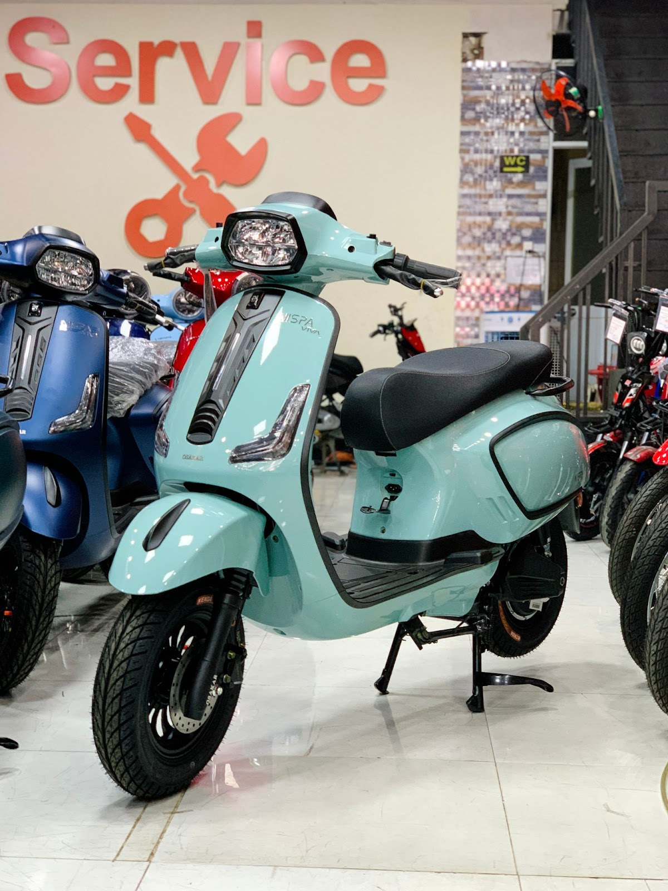
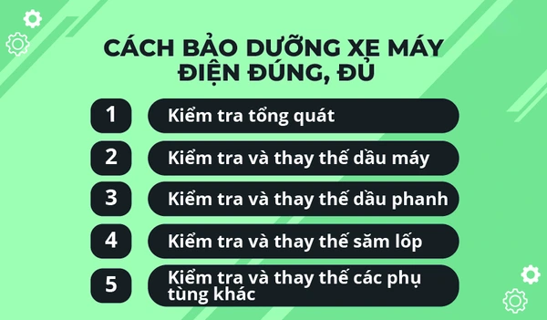

Cẩm nang bảo dưỡng và khắc phục lỗi xe máy điện
Các chuyên gia khuyến nghị nên bảo dưỡng xe điện sau mỗi 1.000 km hoặc khoảng 6 – 8 tháng sử dụng.
Việc bảo dưỡng định kỳ bao gồm kiểm tra, chăm sóc và thay thế các bộ phận cần thiết theo hướng dẫn của nhà sản xuất. Điều này mang lại nhiều lợi ích quan trọng:
Bảo dưỡng định kỳ xe máy điện đóng vai trò quan trọng, giúp “chiến mã” của bạn luôn vận hành ổn định và an toàn trên mọi cung đường.
Khi nào cần bảo dưỡng?
Lốp xe ảnh hưởng trực tiếp đến an toàn khi di chuyển. Bạn nên kiểm tra và bảo dưỡng sau mỗi 6 tháng. Nếu gặp các dấu hiệu sau, cần thay lốp ngay:
Khi bảo dưỡng xe máy điện, đừng quên kiểm tra các bộ phận như phanh, tay ga, khung và yên xe. Việc kiểm tra định kỳ giúp ngăn ngừa hỏng hóc đột ngột, đảm bảo an toàn khi sử dụng.
Bảo dưỡng xe định kỳ giúp duy trì hiệu suất, an toàn và tiết kiệm chi phí, đảm bảo xe luôn hoạt động tốt nhất.

Người dùng không nên tự ý thay thế bất kỳ bộ phận nào của xe máy điện. Thay vào đó, hãy đưa xe đến hệ thống showroom Phố Xe Điện để được bảo dưỡng đúng cách.
Nếu bạn đang sử dụng xe máy điện được phân phối chính hãng từ E-Bike Shop, hãy đến ngay showroom xe điện gần nhất để được kiểm tra và bảo dưỡng chuyên nghiệp. Chúng tôi cam kết đặt chất lượng lên hàng đầu và mang đến nhiều ưu đãi, đảm bảo xe luôn vận hành tốt nhất.